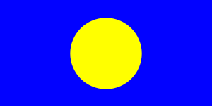
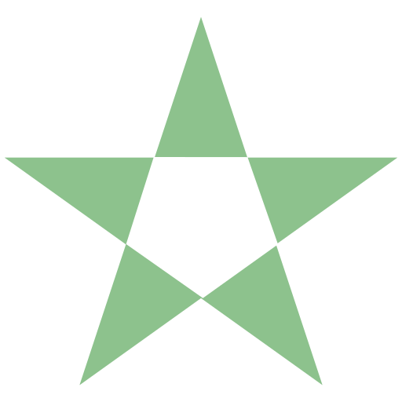
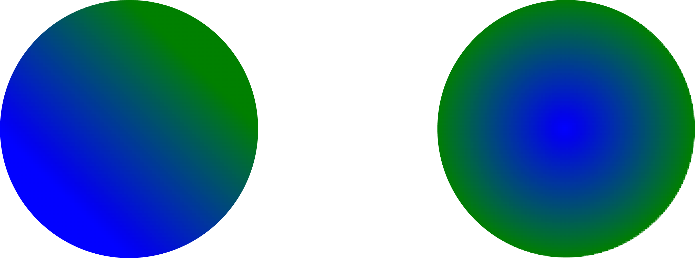

Common Use Cases
Because of their scalability and sharpness on any context and size, SVG files are usually ideal for responsive design and graphics that appear in multiple locations throughout the website. Please find below some examples of the most common use cases of SVG images.
- Icons
- Buttons
- Navigation Menu
- Favicons
- Logos
- Infographics
- Illustrations and Artwork
Icons are one of the most used forms of SVG files. Examples:
The icons can be created as needed through programs such as Illustrator or can be accessed via online resources. For example, websites such as iconmonstr and SVG Repo are excellent online resources for various SVG vectors and icons.
Logos are also a largely used examples of SVG images. Logos in SVG vectors allow for a dynamic behavior and interactivity to the website. Examples of the popular commercial logos are as follows:
Infographics another great example of using SVG. Besides the interactivity, SVG as charts and graphs allows us to precisely control over the layout of the data.
Usually SVGs are used for simpler images like icons rather than those with more details, in which case png or webp are more commonly used. However, SVGs are also used for illustrations and more complex artwork due to its vector-based characteristic. They provide flexibility without losing its resolution or basically its quality.
Basic SVG Features
- Basic Shapes
-
rect, circle, ellipse, line, polyline, polygon - Fill
fill-opacity: 0 to 1 | 0 to 100%-
fill-rule: "non-zero" | "evenodd"-
fill-rulesets the color of the part where the shapes overlap.
-
- Stroke
stroke-widthstroke-opacity-
stroke-linecap: "butt" | "round" | "square"- Linecap defines how the end of the stroke is, for example, rounded or angled.
-
stroke-linejoin: "miter" | "bevel" | "round"- The line-join property sets how the meeting point of the strokes look.
- Gradient
linearGradientradialGradient- Transform
translate(x y)rotate(degree)scale(x y)-
skewX(degree)skewY(degree)
With SVG we can create basic shapes, and each has their own attributes to define. For example, their dimensions or radius if it's a circle.
The path element is used to create more
complex shapes using lines and curves. This element is
often found in SVG files obtained from online sources.
The d attribute is used to define the path.
<svg xmlns="http://www.w3.org/2000/svg">
<rect width="100%" height="100%" fill="blue" />
<circle cx="50%" cy="50%" r="50" fill="yellow" />
</svg>

<svg xmlns="http://www.w3.org/2000/svg">
<path d="M 10,30
A 20,20 0,0,1 50,30
A 20,20 0,0,1 90,30
Q 90,60 50,90
Q 10,60 10,30 z" />
</svg>
Fill sets the color of the inside of the
shapes. Within the fill element, we can use
more specific attributes:
<svg xmlns="http://www.w3.org/2000/svg">
<polygon fill="green" fill-opacity="0.5" fill-rule="evenodd"
points="50,0 21,90 98,35 2,35 79,90" />
</svg>

While fill affects the color of the inside, stroke sets the color of the border of the shapes. Stroke also has multiple attributes such as stroke-width, opacity, linecap and linejoin.
Two types of gradient are used to create color
gradations in SVG; linear or radial. They each use
different attributes. For example, linearGradient uses
x1, x2, y1, y2 while radialGradient uses cx, cy, fx, fy,
and r and both include offset and stop-color. The
attributes are defined within the
linearGradient tag element, which is nested
within the defs element.
<svg viewBox="-20 30 300 50" xmlns="http://www.w3.org/2000/svg">
<defs>
<linearGradient id="linear-grad" x1="0" x2="50%" y1="50%"y2="0">
<stop offset="0%" stop-color="blue" />
<stop offset="100%" stop-color="green" />
</linearGradient>
<radialGradient id="radial-grad" cx="50%" cy="50%" r="50%">
<stop offset="0%" stop-color="blue" />
<stop offset="100%" stop-color="green" />
</radialGradient>
</defs>
<circle cx="0" cy="50" r="20" fill="url(#linear-grad)" />
<circle cx="50" cy="50" r="20" fill="url(#radial-grad)" />
</svg>

Another basic feature of SVG is transform, which is similar to the transform property in CSS. It applies transformation to elements nested in the svg element, and multiple transformations can be added at the same time. Some examples of transform are listed below.
<svg height="300" width="500" xmlns="http://www.w3.org/2000/svg">
<rect height="100" width="200" y="70" />
<rect height="100" width="200" transform="translate(400 10) scale(1.2 0.8) rotate(90) skewX(30)" />
</svg>